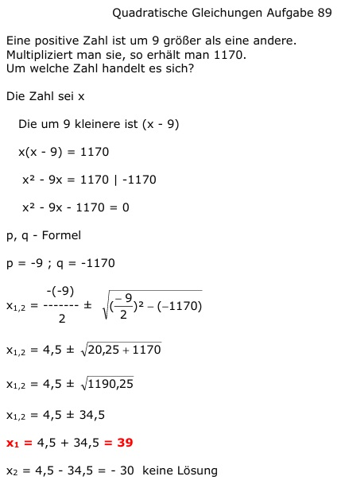

Aufgabe 89 Eine positive Zahl ist um 9 größer als eine andere. Multipliziert man sie, so erhält man 1170. Um welche Zahl handelt es sich? Die größere Zahl sei x Die um 9 kleinere ist (x - 9) x(x - 9) = 1170 x2 - 9x = 1170 |-1170 x2 - 9x - 1170 = 0 p, q - Formel p = -9 ; q = -1170  x1,2 = 4,5 ± 34,5 x1 = 4,5 + 34,5 = 39 x2 = 4,5 - 34,5 = -30 keine Lösung